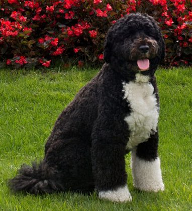
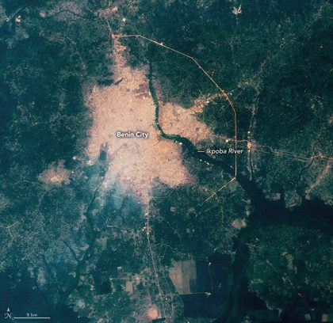
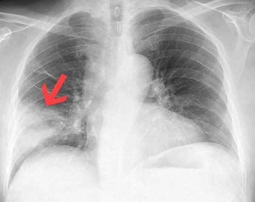
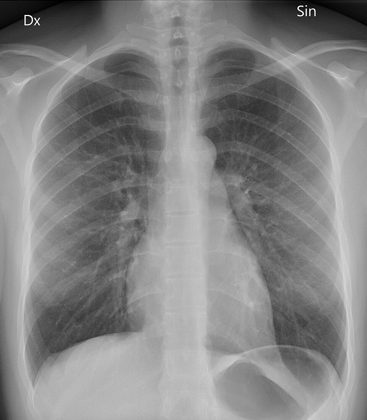

| → Space PgDn | next step / slide |
| ← PgUp | previous |
| O · Esc | slide overview |
| A | show / hide step-by-step reveals |
| T | presenter timer (R resets it) |
| F | full screen |
| Home End | first / last slide |
Each slide has its own address (e.g. #filter). Arrow keys stop working while the cursor is inside an embedded tool — click outside it or use the ‹ › buttons.
Convolutional networks, representation learning and GANs
12 November 2026
What an MLP does well, and what it assumes about the data.
Why images need a different architecture: convolution, pooling, and what a CNN learns.
Why and how to learn representations without labels: autoencoders.
GANs: from representing images to generating them.
A weighted sum of all its inputs plus a bias (the linear combination: a matrix–vector product \(W\mathbf{x}+\mathbf{b}\)), passed through a non-linearity \(\sigma\) such as ReLU or sigmoid.
Forward pass → loss → backpropagation → update (Rumelhart et al., 1986).
XOR: a linear model scores ≈ 50 % (Minsky & Papert, 1969).
The hidden units learn new coordinates (h₁, h₂) in which one straight line separates the classes.
Stacked linear layers would collapse into a single linear map — no better than the model on the left.
With enough hidden units, an MLP with one hidden layer and a non-polynomial activation can approximate any continuous function on a bounded region as closely as we like (Cybenko, 1989; Hornik, 1991; Leshno et al., 1993). This says good weights exist — not that training will find them, nor how many units are needed.
Each layer is one matrix multiplication, which GPUs compute in parallel.
Every input is connected to every unit: the architecture says nothing about the structure of the data (neighbours, order, symmetries).
Because nothing is assumed, everything must be learned from examples.
Parameters = inputs × units + units: they explode for large inputs, as the next part shows.
A greyscale image is a matrix \(X\in\mathbb{R}^{H\times W}\) (1 channel); a colour image is three of them, \(X\in\mathbb{R}^{H\times W\times 3}\) (red, green, blue), each number from 0 to 255.
In the highlighted 3×3 patch, numbers barely change in smooth regions and jump at edges: patterns live in local neighbourhoods.
Even a small photo has hundreds of thousands.
Each unit looks only at a small neighbourhood: far fewer connections.
The same few weights are reused at every position: far fewer parameters, and a pattern is found wherever it occurs.
Each output is computed independently of the others, so all positions can be computed at once on a GPU.
Right for images. Wrong for a spreadsheet, where neighbouring columns mean nothing.
A dense layer is the same product with a full matrix of 15 different weights. To keep the picture simple, the “image” here is a single row of 8 pixels.
Each output number is computed from a small patch only (here 3×3 = 9 pixels), not from the whole image: multiply each pixel by a weight and add.
The same 9 weights, the kernel, are used at every position. Sliding the kernel over the image builds a feature map that shows where its pattern occurs.
Image processing chooses the numbers by hand (Sobel, blur). In a CNN they are parameters, initialised at random and updated by backpropagation, like the weights of an MLP. A convolutional layer is a set of such learned filters.
A filter that reacts to vertical edges ignores flat regions; another keeps only the coarse shape; another exaggerates fine texture. Each feature map answers a different question about the image.
Together their feature maps describe the image from several points of view, all computed from the same pixels.
Here we chose the kernels by hand. A CNN starts from random kernels and learns the ones its task needs.
A filter spans every input channel: for a colour image its kernel is 3×3×3, and the three channels are combined into one number per position.
Each filter detects a different pattern and produces its own feature map. Stacked together they are the layer’s output.
All filters are learned by backpropagation. First-layer filters of trained networks look like edge and colour detectors.
The output of one layer is the input of the next, with a non-linearity (ReLU) in between. A unit in layer 2 depends on a small patch of layer 1, and each of those on a patch of the image.
The region of the image a unit depends on. It grows with depth, so early layers detect small patterns and later layers combine them into larger ones.
Each extra 3×3 convolution widens the view by only 2 pixels: after \(L\) layers a unit sees \((2L+1)\times(2L+1)\) pixels. Shrinking the maps, downsampling, makes the receptive field grow much faster. Try adding a pooling layer: it is the next topic.
Fewer numbers to process: a 2×2 window with stride 2 keeps ¼ of them. Later layers and the final dense layer become much cheaper, and their receptive fields grow faster.
The window moves by the stride; stride 2 halves the width and height. Max or mean pooling has no parameters; a convolution with stride 2 also downsamples, but with learned weights.
A strong response usually stays inside its window, so a pooled map changes less than the feature map when the digit moves by a pixel. Partial, not perfect (second tab).
Small receptive fields can only see edges and colour; as the receptive field grows, units combine earlier ones into patterns, textures, parts and objects (Zeiler & Fergus, 2014).
No one asked the network to find fur or eyes: these structures emerge because they help the task.



Early layers learn edges and textures that are useful for any image; features become more specific with depth (Yosinski et al., 2014).
Keep the extractor (frozen, or lightly fine-tuned) and train only a small new head on little data. Features from a CNN trained for one task are a strong baseline for many recognition tasks (Razavian et al., 2014).
Jean et al. (2016) took a CNN pre-trained on ImageNet, trained it to predict night-time lights from daytime satellite images, and used its features to estimate village-level economic well-being in five African countries.
Convolution, ReLU and pooling layers turn the image into a small set of feature maps; shapes shrink step by step.
The maps are flattened into a vector and a dense layer with softmax gives one probability per class: the MLP you know, now fed with learned features.
All the numbers (kernels and dense weights) are learned jointly by backpropagation. This small network, trained on 800 digits, is right on 97 % of 200 unseen ones.
Convolution: 6 filters of 3×3, no padding, stride 1. Max-pool 2×2, stride 2. Dense: 10 units. Count every weight plus one bias per filter and per dense unit.
Every filter produces a feature map saying where one pattern occurs. Stacked, the layers turn pixels into increasingly useful features (edges, textures, parts, objects) that a final classifier can use.
Each output position is computed independently of the others, so a GPU can compute all of them at once. This is what made training large CNNs practical.
Shift an object in the image and its feature map shifts with it: a pattern is found wherever it occurs, without learning it again for each position.
The kernel is reused at every position, so a layer does not grow with the image. One dense layer of 1,000 units on a 224×224 colour photo has about 150 million weights; a convolutional layer with 64 filters of 3×3 has fewer than 2,000.
Next: representation learning, then GANs.
For decades experts designed the filters (edges, histograms of oriented gradients; Dalal & Triggs, 2005) and only a classifier was trained on top.
A CNN uses the same operation, but its kernels are learned from the data, together with the classifier — end to end, by backpropagation.
The features the network computes are a representation of the input. Representation learning: let the data decide how to represent it so that the task becomes easy (Bengio et al., 2013).

Reuse a representation learned on one task as the starting point for another: a good representation makes a later learning task easier (Goodfellow et al., 2016).
Learn f on a very large dataset with a general objective, often without labels. This is where most of the data and computing power go.
Adapt a pre-trained model to a specific task or behaviour with little data: train only a new head, or update f slightly.
Force the information through a low-dimensional bottleneck and ask for the input back. What is kept must be what matters for rebuilding. This is the autoencoder: our focus next.
Make the labels from the data itself: hide part of it and predict that part. Masked autoencoders do it for images, word2vec for words. Often it works better than plain autoencoding — here, just a comment.
f maps the image x to a short vector z; g maps z back to an image. For images, f is a CNN that downsamples and g a mirrored network that upsamples.
The loss compares the output with the input itself, so any collection of images is a training set (Hinton & Salakhutdinov, 2006).
If z is as wide as x, copying solves the task and nothing is learned. With a narrow z the network must keep what matters.
The error falls from the “average digit” baseline as the network learns.
Digits cluster in the latent space although labels were never used (colours are for display only).
Smaller latent vector: blurrier rebuilds. Larger: sharper, but less compressed.
Given an image, which class? It learns the boundary between classes.
Example: the CNN classifier. Input: an image. Output: a label.
What do the images themselves look like? It learns how the data are distributed, so that we can sample new data.
Example: a model that outputs new digits. Input: nothing but randomness. Output: a new image.
Needs an input image and returns an approximate copy of that image.
Example: the autoencoder. It can only describe images it is given.
Needs no input image: a random vector is turned into a new image that looks like the training data.
The decoder is the same kind of network; what is hard is training it without a target.
We have seen how neural networks can extract useful representations of images and reconstruct them. But what if we want a network to generate entirely new images that look like they came from our training data?
The decoder only ever saw vectors produced by the encoder from real images. Nothing makes a random vector land where realistic images live — and with no target image, there is no way to tell it that it got it wrong.
learn to reconstruct individual examples.
learn to generate samples that resemble the overall data distribution.
Turns random noise into an image. It is trained so that the discriminator says “real”:
$$L_G=-\log D\bigl(G(z)\bigr)$$
A classifier that gives each image a probability of being real. Trained to say 1 for real and 0 for fake (binary cross-entropy):
$$L_D=-\log D(x)-\log\bigl(1-D(G(z))\bigr)$$
It only receives D’s feedback, step after step. From pure noise it ends up producing images that D can no longer tell from the real ones.
If D wins too easily, G gets little useful feedback; real GANs need careful tuning (Goodfellow, 2016).
Each pair has one real photograph and one face generated by a GAN (StyleGAN). Click the real one. Keep your score over 10 rounds.
The first GAN samples (2014) were small and blurry (Goodfellow et al., 2014); StyleGAN faces are hard to tell from photographs (Karras et al., 2019).
If it looks cramped, use ⤢ Full width or open it in its own tab.
Images: neighbours matter and patterns repeat, so one local kernel is shared across positions (this class).
Text, speech, time series: read one element at a time and carry a memory (hidden state). LSTMs add gates to remember longer.
Every position weighs every other position (attention) and all can be computed in parallel. The basis of modern language models.
Each architecture builds in an assumption about the structure of the data (grid, sequence, set of related items). Choosing it well is what lets a network learn from limited data — the point of the MLP’s “weak inductive bias” discussion at the start.
A linear combination plus a non-linearity, repeated: universal in principle, but they assume nothing about the data, so images need something that does.
A convolution reuses one small learned kernel at every position (local connections, shared weights); stacked layers turn pixels into features that can be reused for new tasks.
An encoder maps data to a vector that can be reused; without labels it can be learned by compressing the data and rebuilding it (autoencoder).
To generate new images there is no target to rebuild, so a generator is trained against a discriminator that learns to tell real from fake.
Cybenko, G. (1989). Approximation by superpositions of a sigmoidal function. Mathematics of Control, Signals and Systems, 2, 303–314.
Goodfellow, I., Bengio, Y., & Courville, A. (2016). Deep Learning. MIT Press. deeplearningbook.org
Hornik, K. (1991). Approximation capabilities of multilayer feedforward networks. Neural Networks, 4(2), 251–257.
Leshno, M., Lin, V. Y., Pinkus, A., & Schocken, S. (1993). Multilayer feedforward networks with a nonpolynomial activation function can approximate any function. Neural Networks, 6(6), 861–867.
Minsky, M., & Papert, S. (1969). Perceptrons. MIT Press.
Rumelhart, D. E., Hinton, G. E., & Williams, R. J. (1986). Learning representations by back-propagating errors. Nature, 323, 533–536.
Beery, S. (2024). Lecture 4: Architectures for grids. MIT 6.7960 Deep Learning, Fall 2024. MIT OpenCourseWare. · Isola, P. (2024). Lecture 11: Representation learning I. MIT 6.7960 Deep Learning, Fall 2024. MIT OpenCourseWare.
LeCun, Y., et al. (1989). Backpropagation applied to handwritten zip code recognition. Neural Computation, 1(4), 541–551.
LeCun, Y., Bottou, L., Bengio, Y., & Haffner, P. (1998). Gradient-based learning applied to document recognition. Proc. IEEE, 86(11), 2278–2324.
Krizhevsky, A., Sutskever, I., & Hinton, G. E. (2012). ImageNet classification with deep convolutional neural networks. NeurIPS, 25.
Luo, W., Li, Y., Urtasun, R., & Zemel, R. (2016). Understanding the effective receptive field in deep convolutional neural networks. NeurIPS, 29.
Olah, C., Mordvintsev, A., & Schubert, L. (2017). Feature visualization. Distill, 2(11), e7.
Zeiler, M. D., & Fergus, R. (2014). Visualizing and understanding convolutional networks. ECCV.
Szegedy, C., et al. (2015). Going deeper with convolutions. CVPR.
Yosinski, J., Clune, J., Bengio, Y., & Lipson, H. (2014). How transferable are features in deep neural networks? NeurIPS, 27.
Razavian, A. S., Azizpour, H., Sullivan, J., & Carlsson, S. (2014). CNN features off-the-shelf: an astounding baseline for recognition. CVPR Workshops.
Jean, N., et al. (2016). Combining satellite imagery and machine learning to predict poverty. Science, 353(6301), 790–794.
Wang, Z. J., et al. (2021). CNN Explainer: Learning convolutional neural networks with interactive visualization. IEEE TVCG, 27(2), 1396–1406.
Bengio, Y., Courville, A., & Vincent, P. (2013). Representation learning: A review and new perspectives. IEEE TPAMI, 35(8), 1798–1828.
Dalal, N., & Triggs, B. (2005). Histograms of oriented gradients for human detection. CVPR.
Baldi, P., & Hornik, K. (1989). Neural networks and principal component analysis: Learning from examples without local minima. Neural Networks, 2(1), 53–58.
Hinton, G. E., & Salakhutdinov, R. R. (2006). Reducing the dimensionality of data with neural networks. Science, 313, 504–507.
Bourlard, H., & Kamp, Y. (1988). Auto-association by multilayer perceptrons and singular value decomposition. Biological Cybernetics, 59, 291–294.
He, K., Chen, X., Xie, S., Li, Y., Dollár, P., & Girshick, R. (2022). Masked autoencoders are scalable vision learners. CVPR.
Mikolov, T., Chen, K., Corrado, G., & Dean, J. (2013). Efficient estimation of word representations in vector space. arXiv:1301.3781.
Ng, A. Y., & Jordan, M. I. (2001). On discriminative vs. generative classifiers: A comparison of logistic regression and naive Bayes. NeurIPS, 14.
Elman, J. L. (1990). Finding structure in time. Cognitive Science, 14(2), 179–211.
Hochreiter, S., & Schmidhuber, J. (1997). Long short-term memory. Neural Computation, 9(8), 1735–1780.
Vaswani, A., et al. (2017). Attention is all you need. NeurIPS, 30.
Goodfellow, I., et al. (2014). Generative adversarial nets. NeurIPS, 27. · Goodfellow, I. (2016). NIPS 2016 tutorial: GANs. arXiv:1701.00160.
Radford, A., Metz, L., & Chintala, S. (2016). Unsupervised representation learning with deep convolutional GANs. ICLR.
Karras, T., Laine, S., & Aila, T. (2019). A style-based generator architecture for GANs. CVPR.
Kahng, M., Thorat, N., Chau, D. H., Viégas, F. B., & Wattenberg, M. (2019). GAN Lab: Understanding complex deep generative models using interactive visual experimentation. IEEE TVCG, 25(1), 1–11.
Bergstrom, C., & West, J. Which Face Is Real? University of Washington. whichfaceisreal.com
Powell, V. Image kernels explained visually. setosa.io · Zhang, A., Lipton, Z. C., Li, M., & Smola, A. J. Dive into Deep Learning. d2l.ai · CS231n ConvNet notes
Interactive: CNN Explainer · GAN Lab · TensorFlow Playground · Feature visualization · more tools
Images (Wikimedia Commons): “Bo, the Obama family dog”, The White House (public domain) · “Rapid Growth for Benin City”, NASA Earth Observatory / L. Dauphin (public domain) · “Hubble2005-01-barred-spiral-galaxy-NGC1300”, NASA, ESA and the Hubble Heritage Team (public domain) · “Normal posteroanterior (PA) chest radiograph (X-ray)” and “X-ray of lobar pneumonia”, M. Häggström (CC0) · feature visualisations: Olah et al. (2017), CC BY 4.0.
Data: Alpaydin, E., & Kaynak, C. Optical Recognition of Handwritten Digits (UCI Machine Learning Repository; 8×8 version distributed with scikit-learn).